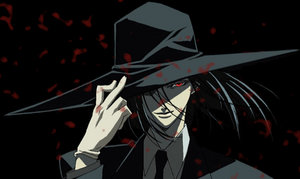

Forums galactiques > Assemblée Galactique : diplomatie officielle > Avertissement aux coalitions et jeunes commandants
Pages : 1
| Mansfeld Respect diplomatique : 4380  28/02 ETU 21:14 | Score : 24 Détails L'ambassadeur de la NRE, qui représentait également les intérêts d'Alfa Deimos, prit la parole. Voix sèche, tranchante, efficace.
Nous serons brefs et passerons outre les formules de politesse. Nos services de renseignement nous indiquent que de jeunes commandants, parfois regroupés sous la forme de coalitions de faible ou moyenne importance, font l'objet d'une politique de recrutement on ne peut plus douteuse pour le compte de l'un ou l'autre des belligérants impliqués dans le conflit entre le Hell Fire et les Insurgés. Outre le fait que nous condamnons cette pratique, qui vise à exposer de jeunes commandants naïfs en échange de promesses de protection et de dons financiers douteux, nous faisons cet appel aux jeunes nations de la galaxie, ainsi qu'aux coalitions de faible ou moyenne importance militaire et économique : Ne tombez pas dans le panneau et ne vous impliquez pas dans un conflit qui vous dépasse et qui risque de détruire votre peuple et vos planètes. Si vos motivations sont essentiellement raisonnées par le besoin d'argent et de matériel, la diplomatie et le commerce, et ce notamment dans le cadre de programmes de coopération avec la République ou les petites nations neutres, vous seront largement plus profitables. Nous espérons avoir été clairs. Être un commandant implique le sens des responsabilités. En politique comme à la guerre, on assume toujours ses choix. Vous ne pourrez pas dire que vous n'avez pas été avertis. Terminé. | ||
| Lizaka Respect diplomatique : 2723  01/03 ETU 18:57 | Score : 11 Détails Personne n’a à souffrir de cette guerre autre que nous. Nous n’acceptons pas que d’autres peuples subissent ce fléau en notre nom. Les Insurgés régleront cette affaire seuls. Que les autres profitent de la Vie et de ses merveilles, ce fardeau est le nôtre et nous l’acceptons sans rechigner. Nous avons endossé notre nouveau rôle et dresserons nos cœurs unis face à la folie qui s’y oppose.
Vivez, c’est tout ce que nous vous demandons, vivez. Intensément. | ||
| chacomatt Respect diplomatique : 54  01/03 ETU 19:26 | Score : 10 Détails Vous vous ventez cher comandant de vous lever contre la propagande des jeunes commandants en les accusant de ne prendre parti que pour l'argent. Mais sachez que même inexpérimenté un commandant à le droit de prendre parti pour des idéaux, jeunes ne veux pas dire sans esprit.
Ainsi suivant des seigneurs plus expérimentés ils pourront ensuite devenir plus important et agir en faveur de l'évolution de la galaxie. Je vous vois de plus passif face à cette guerre de grande empleur comme si vous ne vous préoccupiez que de votre petite planète sans agir pour la galaxie. Au lieu d'inciter à la neutralité et à la passivité venez participer à la grandeur de la galaxie. | ||
| Acanith Respect diplomatique : 1200  01/03 ETU 19:31 | Score : 6 Détails Acanith était exaspéré. ce Chacomatt commençait à l'échauffer...
-Commandant Chacomatt, il est clair que vous avez du hiberner pendant votre longue absence. Il est assez malvenu de prendre position sur un sujet lorsque l'on ignore totalement les tenants et les aboutissants de la situation en question, comme cela semble être votre cas. Acanith se calma un peu. Commandant, jusqu'à présent les critiques qui vous ont été adressées ne faisaient que mettre en relief un manque de connaissance des usages actuels de certaines salles et de la conjoncture spatiopolitique. Accordez-vous un temps de réacclimatation... Mes respects | ||
| andeman Respect diplomatique : 1393  01/03 ETU 19:33 | Score : 4 Détails Un Vaarlag ricana
Grandeur dites vous? Ah dans ce cas, je crois que nous sommes sur le mauvais registre, mon cher. Ce que vous appelez grandeur, moi je le nomme barbarie, boucherie sans nom, stupidité absolue, non sens totale. caprices d'enfants mal éduqués, guerre inutile qui aurait mieux fait de ne pas éclater si les deux camps n'étaient pas aussi interessés et n'avaient un complexe d'ego... Voila ce que je vois par cette guerre et sa grandeur. Par ailleurs l'envoyé deimosien ne critique pas l'engagement des plus jeunes, seulement la manipulation de certains, car vous pourriez trés bien finir en boublier humain pour une cause qui vous est étrangére... C'est un appel a la prudence ni plus ni moins. Libre à vous ensuite de faire la guerre, mais assumez si jamais ca tournait mal... | ||
| Mansfeld Respect diplomatique : 4380 01/03 ETU 23:02 | Score : 4 Détails Un rictus. En voilà un qui mettait les pieds dans le plat avec autant de finesse qu'un Scorbut bourré.
Je vous cite, Chacomatt : "Au lieu d'inciter à la neutralité et à la passivité venez participer à la grandeur de la galaxie." Puis-je savoir comment vous définissez la grandeur de la galaxie ? Et accessoirement, savez-vous à qui vous vous adressez ? Nous ne vous connaissons pas... et vous semblez assez sûr de vous, connaissez-vous votre histoire galactique ainsi que vos dossiers sur le bout des doigts pour être aussi bravache dans vos fanfaronnades ? | ||
| Thyrion Respect diplomatique : 30  02/03 ETU 07:17 | Score : 5 Détails Je reconnais mon ignorance concernant ces dossiers mais en manière générale une guerre ne fait pas avancer une civilisation mais au contraire, elle replonge ainsi dans l'archaïsme, de plus si de part le jeu des alliances des commandants avec peu d'experience ou de moyens pour se défendre se retrouvent engagés dans un conflit quel qu'il soit, il n'y a q'une infime probabilité pour qu'ils en ressortent victorieux car le fait d'appartenir au camps vainqueur n'est pas une conditions suffisante pour clamer haut et fort sa victoire.
La "victoire" oui peut être, mais quel est le prix à payer pour celle ci? Après tout une victoire amer n'est qu'une pseudo-victoire. Je pense qu'il est important pour les jeunes nations de rester loin d'un conflit qui les dépasse pour se préserver dans l'espoir de prosperer. | ||
| Unknow Respect diplomatique : 225  02/03 ETU 08:46 | Score : 7 Détails Dans le fond de la salle, un personnage peu connu était assis... Il ne savait pas quoi faire... Réagir ou laisser faire...
Alors voilà le fond de leurs pensées... Non, je dois réagir pour le bien de la LM. Ce personnage ce leva et prit la parole de l'assemblée. Commandants, Commandantes, Je suis Unknow, Chef de la LM (Ligue Marchande) Nous vous informons que le Commandant Jean luc Picard a tenter de nous rallier à la cause Borgs, ce que nous avons gentiment refuser. Nous ne voulons pas de problème, c'est pourquoi nous avons refuser, mais certain membres de la LM ont reçu des attaques du Commandant Hetad the return. Ces attaques ne sont pas une erreur puisque le système viser appartenait au Commandant Progress et au Commandant Krathos. De plus, le Commandant Jean Luc Picard nous a prévenu de ces attaques. En voici la preuve: Unknow sortit une feuille venant visiblement des archives de la coalition LM disant: Jean Luc Picard: PROGRESS vous allez etre la cible d'hetad the return pour des raisons encore pour l'instant obscures, il veut vous detruire...Venant de lui je prendrais cette menace tres au serieux...moi seul peut l'arreter ! Je répondrais que non, vous n'êtes pas le seul à pouvoir l'arrêter... Mais je souhaite savoir si ce Commandant a quelque chose à reprocher au Comandant Progress. Je souhaite aussi avoir des explication sur ce point: Jean Luc Picard: OUI la guerre va devenir Galactique ...oui vous devez choisir votre camp! Commandant, votre guerre ne s'étendra pas sauf si vous la provoquez... Mais je voudrais bien savoir POURQUOI sa deviendrai un guerre galactique... Voilà, j'espère avoir des réponses. Merci de m'avoir écouter. Et Unknow retourna à sa place... Tranquillement... | ||
| smileyoyo4 Respect diplomatique : 664  02/03 ETU 10:45  | Score : 3 Détails Choisir votre camp?
Rien de plus simple. Vous avez le choix entre: - les sauveurs de la galaxie 1: Les insurgés - Les sauveurs de la galaxie 2. Le Hellfire - Les pauvres petits democrate que tous le monde prend pour des peureux: - La Corporation Democrate. Entre parenthese j'utiliserai une expression de notre cher Mansfeld: L'habit ne fait pas le moine... Enfin les planetes que le commandant Hetad the return a prise aux commandant Krathos m'appartiennent. En effet je lui avait prété afin de me sauver de l'inssurection. Le commandant Hetad a dit qu'il me les rendrait mais a continuer. Je m'en vait reprendre le PC1 qui m'appartient... | ||
| Mansfeld Respect diplomatique : 4380 02/03 ETU 10:53 | Score : 2 Détails Intéressant...
"Que ces révélations soient vraies ou fausses, ce n'est pas la question. Le seul argument qui puisse être avancé et défendu, c'est de ne pas foncer tête la première dans une guerre dont la portée ne peut être connue. Ce type de révélation pourrait décider certains d'entre nous à choisir un camp, en réaction aux propos tenus par les principaux belligérants. Ceux qui se sentiront choqués par ces propos supposés tenus par le commandant Picard, et éventuellement convaincus par les commentaires des Insurgés, qui ne se feront pas attendre, pourraient commettre l'erreur de s'engager à leurs côtés contre le Hell Fire sur un coup de tête. Tout comme ceux qui verront dans le supposé argumentaire du même commandant Picard, ou qui ne portent pas les Insurgés dans leur coeur, de franchir le pas et de se jeter dans la lutte aux côtés de ceux dont les objectifs réels ne sont pas encore connus, et donc potentiellement pires que ceux des Insurgés, qui ont le mérite d'être clairs. Si c'est pour choisir un camp, je choisis celui de la responsabilité, du réalisme, de la diplomatie et de la sagesse. Que l'une des deux coalitions en guerre en fasse preuve, et nous le rallierons. A défaut, nous choisirons un camp où le respect et le dialogue sont encore de mise : le nôtre. Terminé." | ||
| chacomatt Respect diplomatique : 54 02/03 ETU 15:30 | Score : 3 Détails Cher commandants je suis en effet pas dans l'actualité autant que vous mais avant de venir ici j'ai pris la peinse de m'informer et j'ai tout à fait compris la situation actuelle même si je ne maitrise pas encore le rôle de chacun d'entre vous.
Certes la guerre n'est pas la meilleure des solutions, elle cause des ravages que personne ne souhaite. Mais lorsque certains usent de la force pour imposer qulque chose devons nous rester passif, la fleur au fusils criant peace and love, bien sur que non ! La guerre est certes quelque chose de regretable mais face aux actions de factions tel que le Hellfire il faut repliquer avec les grands moyens pour défendre nos convictions ainsi qu'une certaine stabilité dans la galaxie. Pour en revenir au cas de l'enrolement des jeunes commandants, ce que vous reprochez aux insurgés et aux au Hellfire c'est d'essayer de recruter de nouveaux commandants pour ralier leurs idées. Et même si je trouve LES METHODES DU HELLFIRE INAXEPTABLES en toute objectivité on ne peut pas empecher quelqu'un d'essayer de convaincre d'autre commandants d'adhérer à ses idées. | ||
| Acanith Respect diplomatique : 1200 02/03 ETU 16:15 | Score : 3 Détails Sur ce point nous sommes tout à fait d'accord, Commandant Chacomatt.
Toutefois l'Ambassadeur de Deimos a mis en garde les jeunes Commandants contre le Hellfire qui, sous prétexte de recruter des alliés, obtient en fait de la chair à canon toute disponible. Alors, en toute objectivité, le Hellfire a le droit de faire de la propagande pour son propre compte, et nous avons le droit de mettre en garde les cibles potentielles de ces campagnes mensongères. Mes respects, Commandant Chacomatt. | ||
| chacomatt Respect diplomatique : 54 02/03 ETU 16:20 | Score : 2 Détails Je vois que l'on se comprend, chacun défend ses intérêts et moi le premier. Quel que soit le partit, il cherchera à se défendre et à convaincre, mais chaque commandant reste libre de sa position. Ils ont simplement trois choix : La guerre (Le Hellfire), La défense de la pai et la stabilité (Les insurgés) ou l'observation stoique d'une guerre sans mercie (rester neutre).
A vous de choisir messieurs. | ||
| Ghislynx Respect diplomatique : 602  02/03 ETU 16:29 | Score : 8 Détails Hum…. :"l'observation stoique d'une guerre sans mercie"...
Mon cher chacomat, vous oubliez de préciser que nous (je suppose que c'est bien la Corporation démocrate qui est visée) sommes dans l’obligation de posséder chacun notre sceau de galactico-popcorn si nous voulons pleinement jouir du spectacle... Ceci étant précisé, je vous laisse à vos subtiles analyses politiques. | ||
| Unknow Respect diplomatique : 225 02/03 ETU 16:32 | Score : 4 Détails Commandant Chacomatt,
Quand on vous dit: "OUI la guerre va devenir Galactique ...oui vous devez choisir votre camp!" Cela ne vous fait pas réfléchir? La simple phrase "vous devez choisir votre camps" ne vous fait-elle pas réfléchir pour le cas où vous ne choisiriez pas le camps Borg? | ||
| Ellys Respect diplomatique : 1592  02/03 ETU 16:33 | Score : 12 Détails Oui et malheureusement, la machine de Galactico-popcorn étant hors service, imaginez quelle peut être notre frustration.
Depuis que les soviétiques ont mis leur nez dans les textes régissant les droits du travailleur, les dépanneurs de machine à Galactico-popcorn ne travaillent plus en dehors des heures ouvrables... Ils ont même droit aux congés payés et au treizième mois, si ce n'est pas malheureux... |
Pages : 1
Forums galactiques > Assemblée Galactique : diplomatie officielle > Avertissement aux coalitions et jeunes commandants